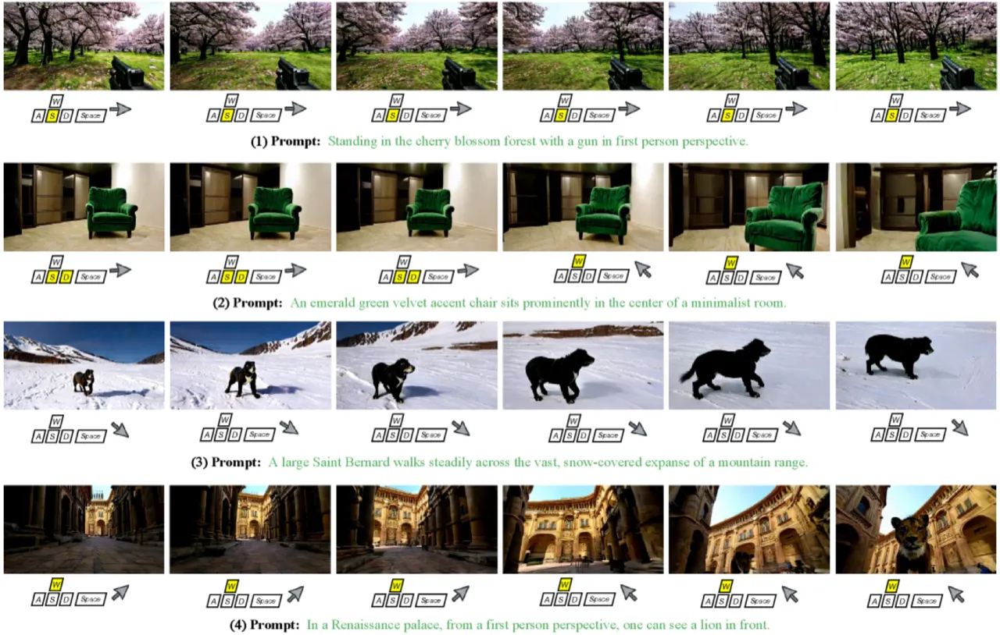
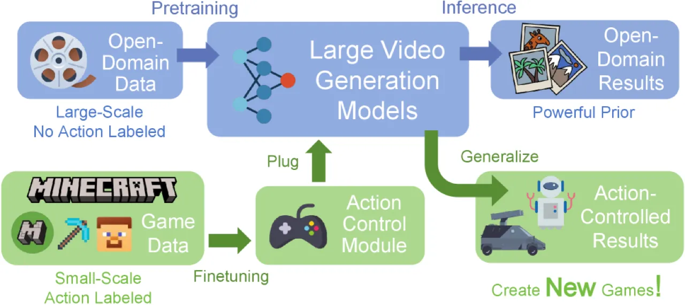
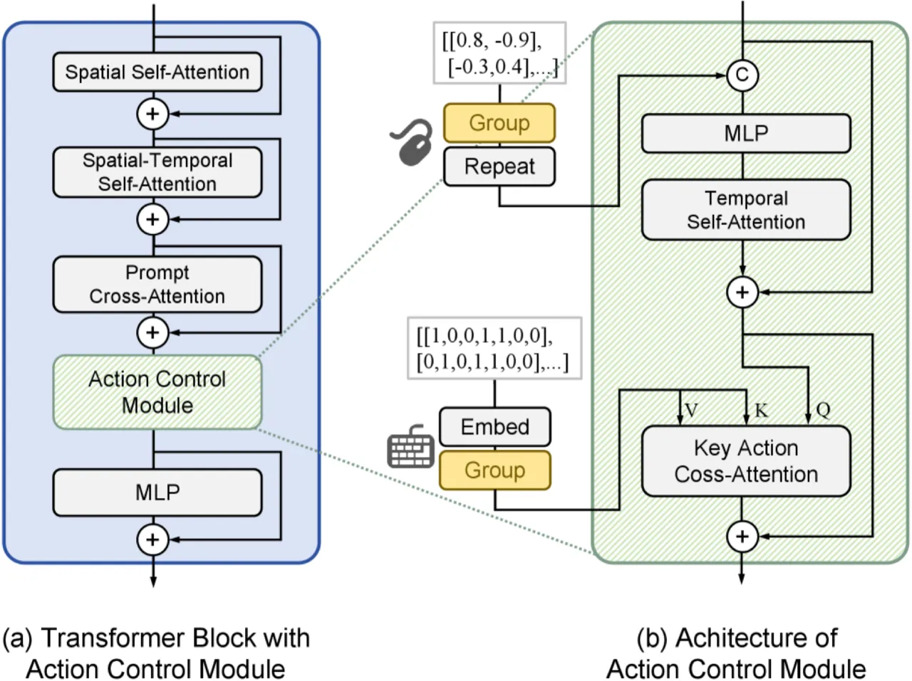
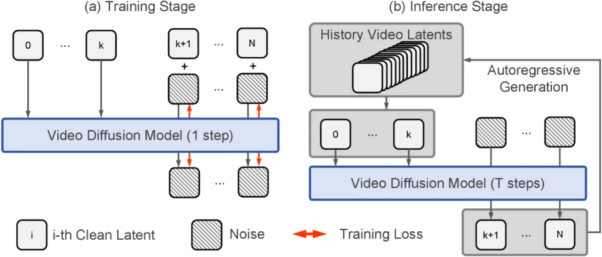
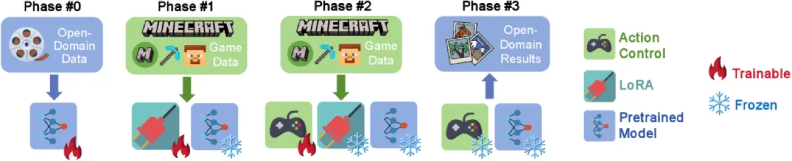

GameFactory 提出了一个将预训练视频扩散模型与小规模游戏数据相结合的框架，通过 style-action 解耦与多阶段训练策略，使动作控制能力能够泛化到开放域场景，从而实现跨场景的全新游戏内容生成。
游戏开发是一项极度耗费人力的过程，生成式视频模型具备自主创作游戏内容的潜力。然而现有方法普遍面临两大核心挑战：动作可控性（精准响应键盘与鼠标输入）和场景泛化性（不局限于固定的游戏风格与场景）。
"Generative videos have the potential to revolutionize game development by autonomously creating new content… GameFactory tackles the critical challenge of scene-generalizable action control, which most existing methods fail to address."

以往的游戏视频生成工作（如 GameNGen、DIAMOND、Genie 等）大多在固定游戏环境下训练，动作控制能力与特定游戏风格深度耦合，无法泛化到新场景。此外，人类采集数据（如 VPT 数据集）存在严重的行为偏差：前进键（W）出现频率高达 50.11%，而后退键仅占 0.32%，导致模型难以学到均匀分布的动作控制能力。

GameFactory 的核心创新在于三个相互配合的模块：动作控制模块（精准处理键盘与鼠标输入）、自回归长视频生成（支持无限长度交互视频）、以及style-action 解耦策略（通过多阶段训练使动作控制脱离游戏风格绑定）。

将动作控制集成到基于 transformer 的 latent video diffusion 模型中：
标准扩散模型在长序列生成上存在局限。GameFactory 采用变噪声水平策略：靠后帧携带更多噪声，靠前帧噪声较少作为条件帧。在训练时，仅对预测帧计算损失（不含条件帧），避免梯度泄漏。在推理时，系统迭代选取最近的 k+1 帧作为条件，生成 N−k 个新帧，从而支持无限长度的交互视频生成。

关键洞察：若在 Phase #2 同时学习风格和动作控制，动作控制能力将与特定游戏风格深度绑定，无法泛化。通过先用 LoRA 隔离风格学习（Phase #1），再单独训练动作控制（Phase #2），最后推理时丢弃 LoRA（Phase #3），动作控制模块得以保留开放域生成先验，从而实现跨场景泛化。
为解决人类行为偏差问题，作者构建了 GF-Minecraft 数据集：70 小时的 Minecraft 游戏录像，采用无偏采样策略收集动作（前进/后退/左/右/跳跃等各键出现频率均衡，约 13.56%），涵盖多样化环境（森林、沙漠、雪地等），并附有文本描述。
实验在 GF-Minecraft 测试集上评估动作可控性（Cam 相机姿态误差↓、Flow 光流误差↓）和生成质量（FID↓、FVD↓），并在开放域视频上评估场景泛化能力。
| 控制方式 | Cam ↓ | Flow ↓ |
|---|---|---|
| 键盘 cross-attention（最优） | 0.0439 | 7.79 |
| 鼠标 concatenation（最优） | 0.0685 | 18.64 |
消融实验表明：离散键盘输入适合用 cross-attention 建模（类似文本条件化），而连续鼠标信号适合用 concatenation 方式注入特征。鼠标运动对视觉的影响强于键盘输入。
| 方法 | Cam ↓ | Flow ↓ | FID ↓ | FVD ↓ |
|---|---|---|---|---|
| One-phase training（基线） | 0.1134 | 76.02 | 167.79 | 1323.58 |
| Multi-phase training（本文） | 0.0997 | 54.13 | 121.18 | 1256.94 |
多阶段训练在所有指标上均显著优于单阶段基线，验证了 style-action 解耦策略的有效性。
| 训练数据 | Cam ↓ | Flow ↓ | FID ↓ |
|---|---|---|---|
| VPT（人类行为偏差） | 0.1324 | 107.67 | 156.69 |
| GF-Minecraft（无偏采样） | 0.0839 | 43.48 | 125.85 |
VPT 数据集中前进键（W）出现频率为 50.11%，后退键仅 0.32%；GF-Minecraft 中各键频率均衡（约 13.56%）。使用 VPT 训练的模型无法执行跳跃、后退等罕见动作，而 GF-Minecraft 训练的模型能成功完成这些动作。
| 训练策略 | Cam ↓ | Flow ↓ | FID ↓ |
|---|---|---|---|
| 全帧计算损失 | 0.1547 | — | — |
| 仅预测帧计算损失（本文） | 0.0924 | 85.45 | 136.95 |

GameFactory 不仅限于 Minecraft 风格。实验展示了将学到的动作控制能力迁移至赛车游戏场景的能力，验证了该框架的跨游戏类型泛化潜力。此外，论文还展示了碰撞检测行为（在 Minecraft 中遇到墙壁时停止前进）的自动涌现，以及超过 100 帧的长序列生成效果。
GameFactory 目前缺乏生成多样化关卡结构与游戏玩法机制的能力。论文明确指出 "design of diverse levels and gameplay" 是重要的未来方向，现有框架更侧重于视觉连续性而非结构化游戏逻辑。
当前框架不支持完整的玩家交互反馈循环，如血量、得分、碰撞奖励等游戏状态反馈机制。论文将 "player feedback systems" 列为未来工作。
GameFactory 目前无法精细地操控游戏世界中的具体物体（如拾取道具、建造方块等），仅能控制摄像机视角和角色运动方向。
自回归生成框架虽支持无限长度视频，但仍面临长上下文记忆衰减（超长序列中早期信息丢失）和实时生成速度两大挑战。论文将 "long-context memory" 和 "real-time game generation" 均列为尚待解决的问题。